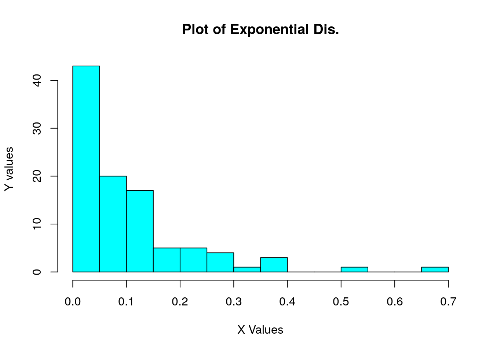
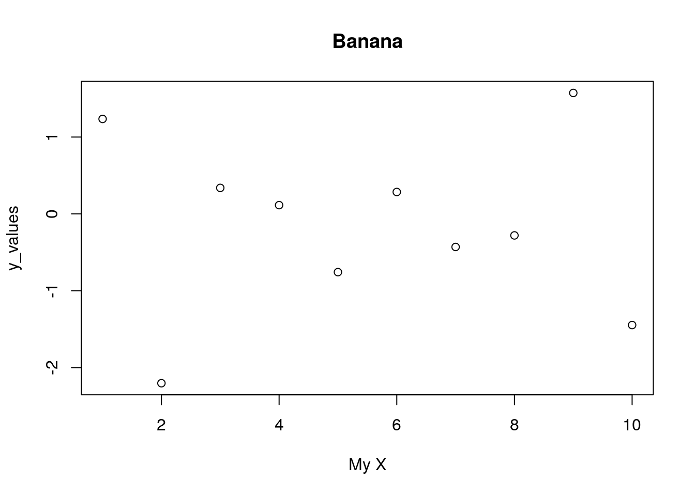
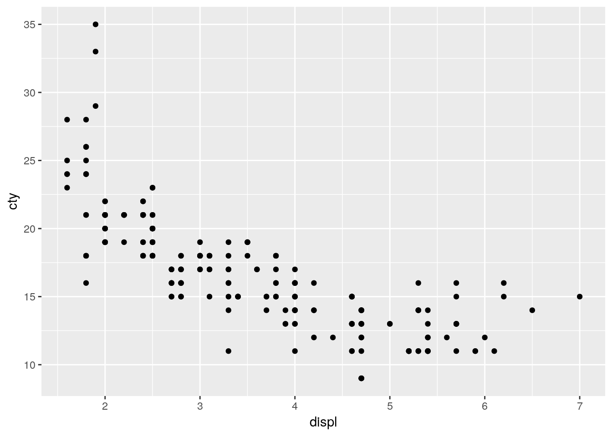
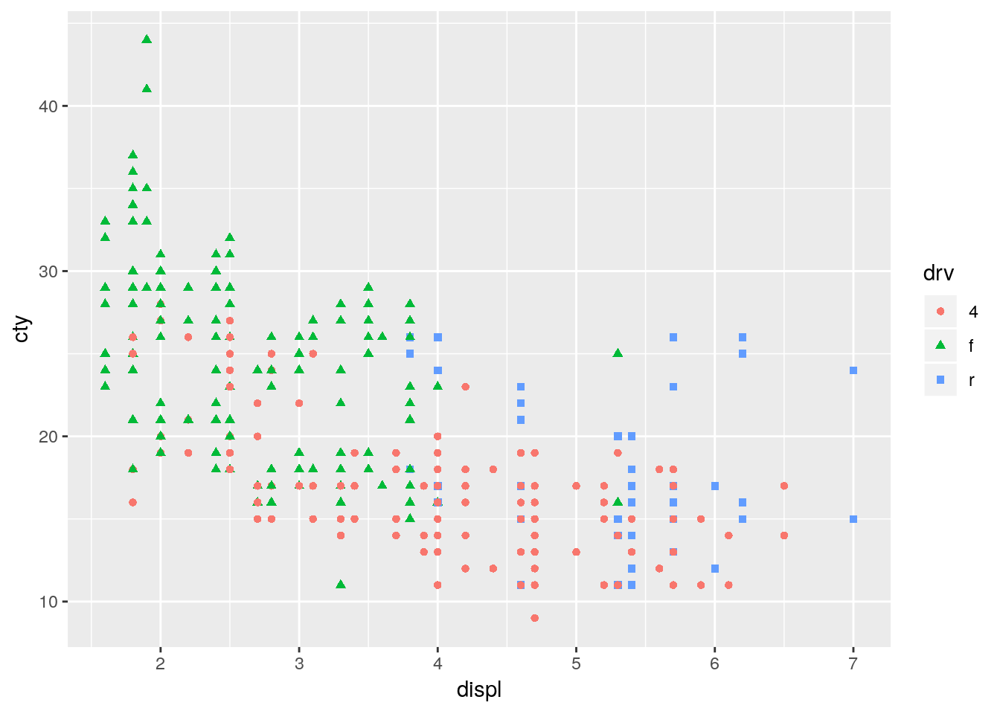

3 Visualization
There are many ways to visualize data in R. Two of the most common include Base R’s built-in functions and the ggplot2 package.
3.1 Base R
The term “Base R” refers to the set of packages and functions that R loads into each session by default. These packages include several statistical and plotting functions you will probably use a lot. Some of the most common plotting functions are given below.
hist()
rpois(100, lambda = 3)## [1] 3 2 5 4 2 4 0 1 0 4 1 7 4 2 1 7 0 3 2 2 1 3 5 2 5 4 1 4 1 3 3 3 5 1 3
## [36] 7 4 6 4 4 5 0 4 3 1 2 3 1 4 2 2 3 4 1 1 3 3 1 4 3 1 4 5 0 2 2 1 1 3 4
## [71] 1 6 2 5 3 3 2 0 2 3 2 4 3 3 5 8 3 3 3 3 3 3 2 4 5 1 2 4 4 1my_vals <- rexp(100, 10)
hist(
my_vals,
breaks = 20,
main = 'Plot of Exponential Dis.',
xlab = 'X Values',
ylab = 'Y values',
col = 'cyan')
barplot()
heights <- 1:10
barplot(heights)plot()
x_vals <- 1:10
y_values <- rnorm(10)
plot(x_vals, y_values, main = 'Banana', xlab = 'My X')
3.2 ggplot
All statistical graphics share the same deep structure, a “Grammar of Graphics”. This means that any given plot can be uniquely identified (reproduced), given the following inputs.
- A dataset
- A coordinate system (2d Cartesian plane, 3d spherical coordinates, even quaternions!1)
- A facet specification (panel arrangement)
- Mappings from variables to aesthetic features
- One scale for each aesthetic mapping
- One or more layers of geometic objects (“geoms”), statistical functions, and position adjustments
The most popular graphics package in R to date (maybe even accross all programming languages) is ggplot2. An update of the original ggplot package, ggplot2 is based on the Grammar of Graphics above. It functions are designed specifically to behave like a grammar, in which you add plot elements together like a sentence.
Lets explore how to build a plot.
We’ll start by loading the ggplot2 package and one of its built-in datasets (called mpg). This dataset includes information on 234 cars that will be convenient for us to plot.
install.packages('ggplot2')library(ggplot2)
data(mpg)
mpg## # A tibble: 234 x 11
## manufacturer model displ year cyl trans drv cty hwy fl class
## <chr> <chr> <dbl> <int> <int> <chr> <chr> <int> <int> <chr> <chr>
## 1 audi a4 1.8 1999 4 auto… f 18 29 p comp…
## 2 audi a4 1.8 1999 4 manu… f 21 29 p comp…
## 3 audi a4 2 2008 4 manu… f 20 31 p comp…
## 4 audi a4 2 2008 4 auto… f 21 30 p comp…
## 5 audi a4 2.8 1999 6 auto… f 16 26 p comp…
## 6 audi a4 2.8 1999 6 manu… f 18 26 p comp…
## 7 audi a4 3.1 2008 6 auto… f 18 27 p comp…
## 8 audi a4 q… 1.8 1999 4 manu… 4 18 26 p comp…
## 9 audi a4 q… 1.8 1999 4 auto… 4 16 25 p comp…
## 10 audi a4 q… 2 2008 4 manu… 4 20 28 p comp…
## # … with 224 more rows3.2.1 Blank ggplot plot
ggplot(mpg)
3.2.2 Geoms
Getting points to display (displ, hwy)
ggplot(mpg) +
geom_point(mapping = aes(x = displ, y = cty))
ggplot(mpg, mapping = aes(x = displ)) +
geom_point(mapping = aes(y = cty), color = 'steelblue') +
geom_point(mapping = aes(y = hwy), color = 'tomato')Other features of points we can change (size = cyl, color = class)
ggplot(mpg, mapping = aes(x = displ, shape = drv, color = drv)) +
geom_point(mapping = aes(y = cty)) +
geom_point(mapping = aes(y = hwy))
Smoothed line
—— (2nd block)
Lines
data(beavers)
ggplot(beaver1, mapping = aes(x = time, y = temp)) +
geom_point() +
geom_line()Vlines and Hlines
Density plots
Histograms
Boxplots
3.2.3 Stat Functions
3.2.4 Themes
3.2.5 Labels
3.2.6 Scales
3.2.7 Saving your plot**
- File type
- Quality
- Dimensions
3.2.8 Facets
<
3.2.9 Where to learn more
The ggplot cheatsheet is available here as is the quickest way to look up something you might have briefly forgotten.
For more complex questions, https://ggplot2.tidyverse.org/index.html contains numerous worked examples that will bring your plots from plain old publishable to down right beautiful.
If you have a really specific question, the “ggplot” tag on Stack Overflow is your best friend. Ask and you shall receive (help)!
Quaternions are… hard to describe. They are basically 4-part complex numbers that satisfy certain conditions. This allows them to elegently represent space in higher than 3-dimensions. However, they have been despised for much of their history. In fact, William Thomson, first baron Kelvin, note in 1892 “quaternions..though beautifully ingenious, have been an unmixed evil to those who have touched them in any way…”↩